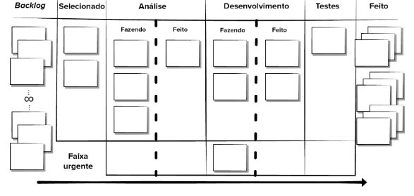

Kanban
Introdução
O Kanban foi desenvolvido na Toyota, onde foi aplicado em um sistema de produção just-in-time através de várias práticas de engenharia industrial. A abordagem representa um sistema puxado, ou seja, a produção é baseada na demanda do cliente.
Assim, foi criado a base de produção Lean em razão a esse sistema de produção.O Lean tem como propósito minimizar as atividades mas não perder a produtividade.
David Anderson em 2007, junto outras figuras da comunidade Agile e Lean, adaptaram o Kanban em uma metodologia baseada em métodos de melhoria do processo e do fluxo de trabalho, enfoca a gestão de alterações, onde é definido a forma de implantação novas funcionalidades no software e a entrega de serviços que é baseada nas necessidades e expectativas do cliente assim gerando valor melhorando a eficiência e produtividade de uma organização
Princípios do Kanban
O Kanban tem abordagem ao processo incremental e evolutivo e à mudança de sistemas para organizações do trabalho de conhecimento. Essa abordagem formulada por David tem como enfoque em fazer coisas e seus fundamentos são divididos em dois tipos de princípios e seis práticas.
Princípios de Gerenciamento de Mudanças
-
Comece com o que você faz agora
O Kanban oferece a flexibilidade de ser usado nos fluxos de trabalho, sistemas e processos existentes e reconhece que esses processos, responsabilidades, títulos tradicionais existentes, tem seu valor para a instituição e em certos casos vale a pena preservar. Sendo assim, naturalmente o método irá levantar o que precisa ser melhorado dentro dos processos de trabalho e ajudará a encontrar e avaliar mudanças. -
Concordar em buscar mudanças incrementais e evolutivas
O método Kanban busca minimizar resistências ao promover pequenas e contínuas melhorias no processo atual, usando colaboração e feedback. Evita mudanças radicais, que costumam encontrar resistência devido ao medo ou incerteza. -
Incentivo de atos de liderança em todos os níveis
A liderança atua para melhorar sua forma de trabalhar através de percepções diárias das pessoas, onde cada observação compartilhada promove uma mentalidade de melhoria contínua, para atingir o desempenho ideal das equipes.
Princípios da entrega de serviços
-
Foco nas necessidades e expectativas do cliente
Ter como objetivo central a entrega de valor para o cliente, compreendendo as expectativas e necessidades particulares de cada cliente. -
Gerenciar o trabalho
Deixar com que as pessoas desenvolvam a habilidade de se auto organizar, garante melhores resultados sem o “ruído” do micro gerenciamento de pessoas. -
Rever regularmente a rede de serviços
Após criar uma abordagem orientada a serviços, é necessário avaliar de tempos em tempos se algo está funcionando e o que pode ser feito para melhorar os resultados entregues.
Práticas do Kanban
O Kanban em si depende seis práticas fundamentais.
-
Visualização de fluxo de trabalho com o quadro Kanban
O quadro Kanban representa o fluxo de trabalho sendo dividido em 3 colunas: “por fazer”, “fazendo”e “feito”. Essas colunas representam o estágio que cada funcionalidade do software está. Essas funcionalidades ficam em cartões que podem ter histórias de usuário isoladas ou defeitos recém-descobertos que são deslocados pelas colunas ao decorrer do progresso do software. -
Limitação de quantidade de work in progress (Estoque em processo) em um dado momento
Mudar o foco de uma equipe no meio de um fluxo, geralmente prejudica o processo de desenvolvimento e certamente irá gerar desperdício e ineficiência. Então se deriva do sistema de produção da Toyota, o sistema puxado, que limita o work in progress nas fases do fluxo ou no fluxo de trabalho, e definindo um limite de itens por estágio, assim só irá ser “puxado” um novo cartão para a coluna quando houver capacidade disponível. Os desenvolvedores são instruídos a completar sua tarefa atual antes de iniciar outra, assim melhorando o tempo de ciclo, a frequência de entrega de funcionalidades do software e a qualidade de trabalho. -
Gerenciamento de fluxo
Gerenciar o fluxo é gerenciar o trabalho, analisando pontos em que o fluxo sofre interrupções e definir mudanças que são subsequentemente implementadas com o objetivo de reduzir desperdícios e portanto, entender como gerar valor de forma mais eficiente. -
Explicitar as políticas de processo
Explicitar as políticas de processo é explicar de forma clara os motivos pelo qual um item foi selecionado e quais os critérios para defini-lo como "feito" Quando todos estiverem com a definição clara do item poderão trabalhar e tomar decisões em relação ao impacto positivo. As políticas de trabalho impulsionam a auto-organização das pessoa. -
Enfocar a melhoria contínua com a criação de ciclos de feedback
Nos ciclos de feedback são introduzidas alterações com base em dados de processo e é medido o efeito das alterações de processo anteriores. Um exemplo de loop de feedback a nível de equipe, são as reuniões Kaban diárias para acompanhar o fluxo de trabalho. -
Melhorar a colaboratividade do time
Tomar decisões de alteração de processos colaborativamente com base em métodos, feedbacks e métricas, engajando todos os membros da equipe se necessário.

Reuniões de equipe do Kanban
As reuniões do kanban são semelhantes a da metodologia Scrum. Caso o Kanban seja introduzido no meio de um projeto já existente, nem todos os itens começam na coluna de backlog. Contudo, para colocar cartões na coluna do processo da equipe, é necessário que os integrantes se perguntem: Onde estão agora? De onde vieram? Aonde vão?
A standup meeting é uma reunião diária em pé onde os desenvolvedores “caminham pelo quadro”. Nessa reunião é identificado itens faltantes no quadro que estão sendo trabalhados que posteriormente são adicionados ao quadro. O objetivo é avançar todos os itens para a coluna “feito”, priorizando os itens de alto valor de negócio para o cliente. Também é analisado o fluxo de processo e identificar possíveis obstáculos à finalização.
Na reunião de retrospectiva semanal são analisadas medidas de processo com o objetivo de achar possíveis melhorias do processo já propondo mudanças a serem implementadas.
Prós do Kanban
- Orçamentos menores e requisitos temporais.
- Permite entrega de produto mais cedo.
- Políticas de processo são explicitadas.
- Melhoria contínua de processo.
Contras do Kanban
- Sucesso definido pela colaboração da equipe.
- Má análise de negócio pode resultar em fracasso de projeto.
- Possibilidade de perda de foco devido a flexibilidade dos desenvolvedores.
- Relutância dos desenvolvedores em usar medições.
Fontes:
PRESSMAN, Roger S., MAXIM, Bruce. Engenharia de Software: Uma abordagem profissional. 9° edição. AMGH Editora Ltda, 2021.Kanbanzine, O que é Kanban? Explicado para Iniciantes, Disponível em: <"https://kanbanize.com/pt/recursos-kanban/primeiros-passos/o-que-e-kanban">.